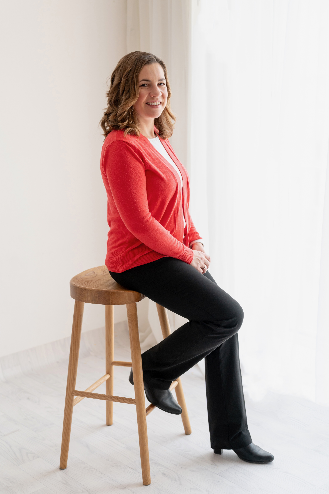
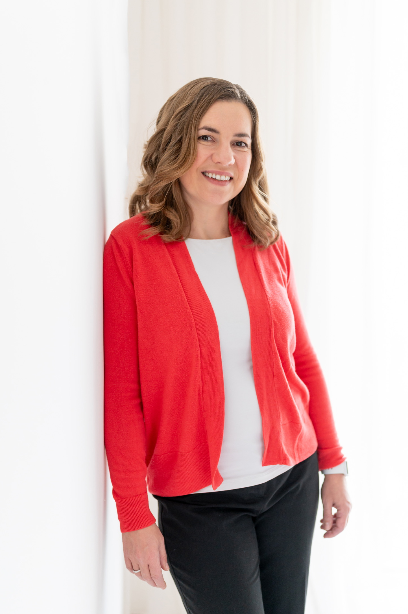

Ich gestalte Geschäftsmodelle, Produkte und Services entlang aller Entwicklungsphasen — von der ersten Hypothese bis zum messbaren Marktergebnis. Innovationsmethodik, unternehmerisches Denken und Umsetzungskompetenz aus einer Hand.


Innovation Strategist mit langjähriger Erfahrung in der Entwicklung neuer Geschäftsmodelle, Produkte und Services — von der Vision bis zum Impact.
Ich verbinde Innovationsmethoden mit unternehmerischem Denken und hoher Umsetzungskompetenz. Schwerpunkte: Business Model Innovation, digitale Geschäftsmodelle im hardwaregeprägten Umfeld, Connectivity & IoT sowie Produktentwicklung in frühen Phasen.
Ich führe interdisziplinäre Teams durch komplexe Transformations- und Innovationsprojekte. Erfahrung sowohl im öffentlichen Institutionenumfeld als auch im internationalen Konzern — aktuell bei der Robert Bosch AG.
Forschungshintergrund als Dr. techn. (TU Wien, Technische Physik). Dreisprachig (DE · EN · BG), Wohnsitz in Wien.
Innovation Management, Geschäftsmodellentwicklung, digitale Geschäftsmodelle, Go-to-Market Strategy.
Produktentwicklung, Produktmanagement, Connectivity & IoT, Service Design.
Projektmanagement, agiles & hybrides Projektmanagement, Change Management, Organisationsentwicklung.
Design Thinking & UX, Lean Start-up, Pretotyping, KPI- & OKR-Entwicklung.
Teamführung (direkt & fachlich), Transformation, Stakeholder-Management, Mentoring & Coaching, Team-Building.
Deutsch (Muttersprache), Bulgarisch (Muttersprache), Englisch (verhandlungssicher).
Angaben gemäß § 5 E-Commerce-Gesetz (ECG) und § 25 Mediengesetz (MedienG).
Bianka Ullmann
Wien, Österreich
E-Mail: ullmann@bianka.at
Private Website zur Darstellung des persönlichen Lebenslaufs und beruflicher Stationen.
Diese Website dient der Präsentation der Person Bianka Ullmann und stellt Informationen zu ihrem beruflichen Werdegang bereit.
Diese Website verarbeitet personenbezogene Daten nur in dem Umfang, der für den Betrieb einer rein informativen Website erforderlich ist. Rechtsgrundlage ist Art. 6 Abs. 1 lit. f DSGVO (berechtigtes Interesse am sicheren Betrieb der Website) bzw. Art. 6 Abs. 1 lit. a DSGVO (Einwilligung).
Bianka Ullmann, Wien, Österreich. Kontakt: [email protected]
Beim Aufruf dieser Website werden durch den Hosting-Provider technisch notwendige Daten (z. B. IP-Adresse, Datum und Uhrzeit der Anfrage, übertragene Datenmenge, Referrer, User-Agent) verarbeitet. Diese Daten werden ausschließlich zur Sicherstellung des Betriebs sowie zur Abwehr von Angriffen verwendet und nach kurzer Zeit gelöscht.
Wenn Sie per E-Mail oder Telefon Kontakt aufnehmen, werden die übermittelten Angaben zur Beantwortung Ihrer Anfrage verarbeitet. Eine Weitergabe an Dritte erfolgt nicht.
Diese Website lädt Schriftarten von Google Fonts (Google Ireland Limited). Beim Laden wird Ihre IP-Adresse an Google übertragen. Sie können das Laden externer Schriften ablehnen — in diesem Fall wird eine systemeigene Schrift verwendet.
Diese Website enthält Verweise auf externe Seiten (z. B. LinkedIn). Beim Anklicken solcher Links gelten die Datenschutzbestimmungen des jeweiligen Anbieters.
Diese Website setzt keine Tracking- oder Marketing-Cookies. Es wird ausschließlich ein lokaler Speichereintrag (localStorage) verwendet, um Ihre Datenschutz-Auswahl zu merken, sodass die Auswahl nicht bei jedem Besuch erneut abgefragt wird.
Sie haben das Recht auf Auskunft, Berichtigung, Löschung, Einschränkung der Verarbeitung, Datenübertragbarkeit sowie Widerspruch und Widerruf einer erteilten Einwilligung. Beschwerden können Sie bei der österreichischen Datenschutzbehörde einbringen (www.dsb.gv.at).